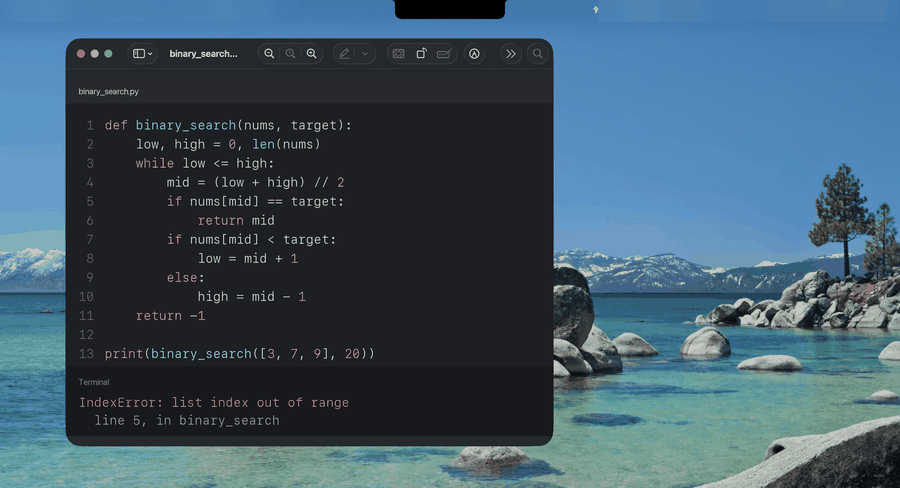
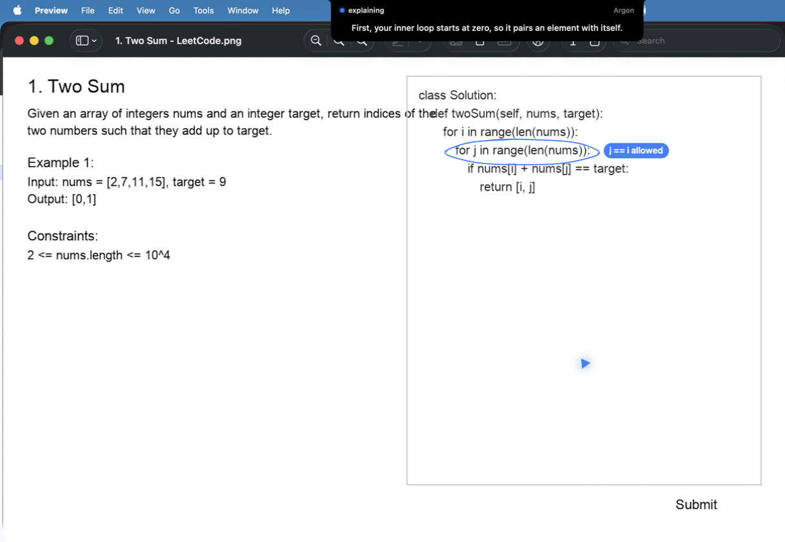
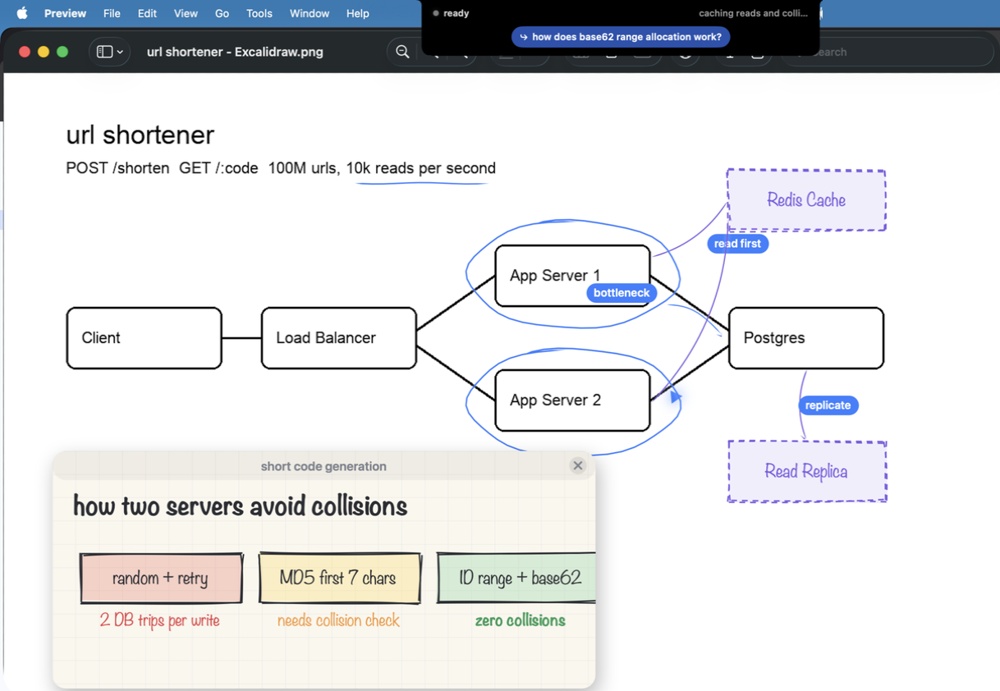
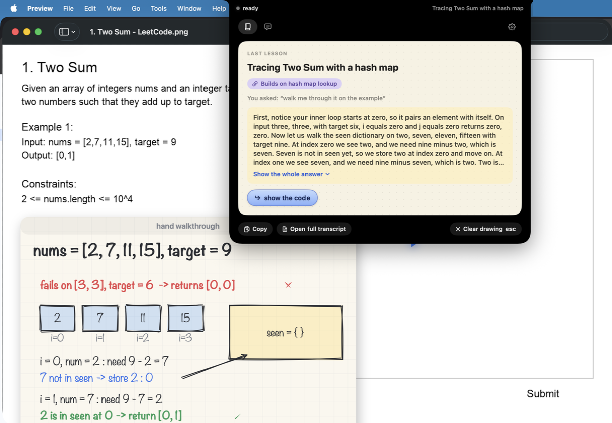
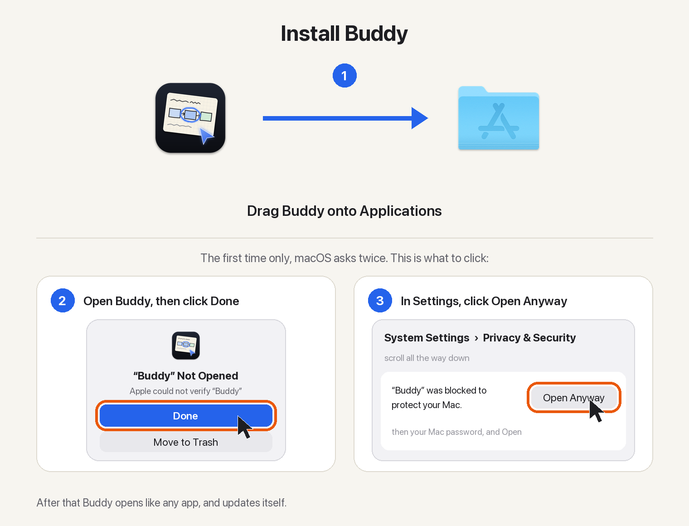

Ask about anything on your screen. Buddy explains it out loud and draws on it while it talks, like a friend leaning over your shoulder. It lives in your Mac's notch.

A real answer, sped up. The words under the notch are what Buddy is saying.
No chat window, no copying screenshots. Ask right where you are, in any app.
Hold ⌃ ⌥ and speak, or press ⌃ ⌥ T and type. Your words show under the notch.
It reads what is on your screen at that moment: the code, the problem, the diagram, the app.
One sentence at a time, each with its marks: rings on your code, and a hand-drawn card when a picture helps.
Learn something new, get through an app, fix an error, or check your own work. Buddy sees what you see.
Code, a paper, a dashboard, a config file. Ask in your own words and it rings what it is talking about, one sentence at a time.
“How do I export this?” One step at a time, pointing at each button and waiting for your click. Ask again later and it replays from memory.
When an error appears in a terminal or editor, the notch glows. One tap and it rings the line that caused it. Nothing is sent until you ask.
Draw a design in Excalidraw, draw.io, Miro or Freeform and ask what is missing. It marks your boxes and sketches additions beside them.
Say “teach me TCP from scratch” and the screen becomes a whiteboard it teaches on, part by part. Then teach it back to check yourself.
On LeetCode and similar sites: a nudge first, then the approach, then a walk-through. The code only when you ask.
Watching a video lecture? Ask about it and Buddy knows the last minute of what was said. Nothing to switch on.
Answers build on earlier lessons, every lesson becomes a notebook page, and a map shows what is fading. All kept on your Mac.



Both ways get the newest version, and Buddy keeps itself up to date after that.

Drag Buddy to Applications, then open it. macOS asks once, because Buddy is not notarized: click Done, then Open Anyway in System Settings, Privacy & Security. Setup asks for your name and keys.
Download for MacIn Terminal. Homebrew adds Buddy's repository as a tap and asks you to trust it once.
brew tap projects-hacks/buddy https://github.com/projects-hacks/buddy
brew trust projects-hacks/buddy
brew install --cask projects-hacks/buddy/buddyThe first time it opens, macOS asks once: click Done, then Open Anyway in System Settings, Privacy & Security. No brew upgrade needed: Buddy updates itself.
Buddy is free and open source (MIT). It runs on your own API keys, so you pay the providers directly for what you use: usually one to six cents a question. Settings shows what you have spent today.
An Anthropic key is recommended. A Gemini key is optional and adds a second model, and a Deepgram key is optional and gives Buddy a natural voice and sharper hearing instead of the built-in Mac ones. Setup tests each key as you paste it.
The screen is captured only while you hold the keys or ask, and dropped if no question follows, or while it walks you through a task. The microphone is open while you hold the keys and, so you can say “wait, why?” or “hold on” without them, while an answer plays, with a mic in the notch to show it; Esc or Stop ends the answer and closes it, and it never opens on a Bluetooth headset. Speech is heard by Deepgram if you added a Deepgram key, and transcribed on your Mac if not. The screenshot and question go to the model that answers. Transcripts, memory, notebook pages and keys stay on your Mac, and there are no analytics.
Yes, when a video lecture is in front. Buddy reads the playback time and takes the minute before it from the page's transcript (YouTube's Show transcript, Coursera's transcript) or from YouTube's captions, which sends YouTube only the video's id. Where no transcript can be read, and only after you allow System Audio Recording when macOS asks, Buddy keeps the last 90 seconds of the front app's own sound in memory while it plays (for a browser, all its tabs), empties it when you switch apps, writes nothing to disk, and transcribes its newest 65 seconds only when you ask about the video (a player's time is on screen, or you ask what was said): by Deepgram if you added a key, on your Mac if not. It never uses your microphone for this, and never hears calls or meetings (Zoom, Teams, Meet, FaceTime, Discord, Slack, Webex, Skype, WhatsApp, or any app using a microphone) or music apps.
Only inside the notebook. Each finished lesson is kept as a page, and when the lesson marked something on your screen, the page holds a small JPEG of just that marked part, cut from the screenshot taken for the question, never the whole screen. A page is about 40 to 80 KB and stays on your Mac in Application Support/Buddy/Notebook. A question you cancel keeps nothing. In the Notebook window you can see each page's size, delete a page, a day or all notes, and turn off keeping new lessons. Exporting to PDF writes only where you choose to save it.
Buddy is signed but not notarized by Apple, which needs a paid developer account. macOS asks once; after Open Anyway it opens like any other app, including after updates.
No. It explains whatever is on your screen: code at work, an app you have never used, an error, a design you are drawing, a lecture or a practice problem. It explains, hints and reviews, and never quizzes or grades. On practice problems it holds back the code until you ask for it.
On GitHub issues. Feedback is very welcome.
Free, open source, and set up in a minute.
Download for Mac